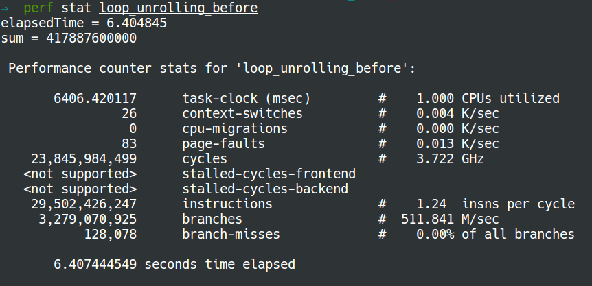
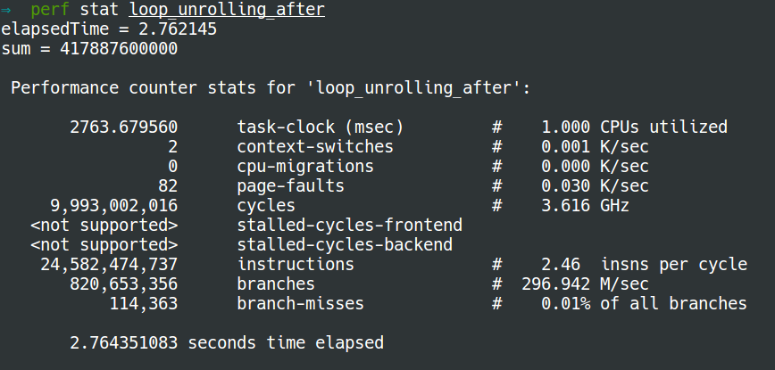

Loop unrolling
To understand loop unrolling, we will look into the next two pieces of code.
Normal loop
#include <time.h>
#include <stdio.h>
#include <stdlib.h>
int main() {
// Generate data
const unsigned arraySize = 16384; //32768
int data[arraySize];
srand((int)123);
for (unsigned c = 0; c < arraySize; ++c)
data[c] = rand() % 256;
// Test
clock_t start = clock();
long long sum = 0;
for (unsigned i = 0; i < 100000; ++i) {
// Primary loop
for (unsigned c = 0; c < arraySize; ++c) {
sum += data[c];
}
}
double elapsedTime = ((double)(clock() - start)) / CLOCKS_PER_SEC;
printf("elapsedTime = %f\n", elapsedTime);
printf("sum = %llu\n", sum);
}
After loop unrolling
Now we do loop unrolling on the primary for loop. The modified program is as
following:
#include <time.h>
#include <stdio.h>
#include <stdlib.h>
int main() {
// Generate data
const unsigned arraySize = 16384; //32768
int data[arraySize];
srand((int)123);
for (unsigned c = 0; c < arraySize; ++c)
data[c] = rand() % 256;
// Test
clock_t start = clock();
long long sum = 0;
long long sum1 = 0, sum2=0, sum3=0, sum4=0;
for (unsigned i = 0; i < 100000; ++i) {
// Primary loop
for (unsigned c = 0; c < arraySize; c+=4) {
sum1 += data[c+0];
sum2 += data[c+1];
sum3 += data[c+2];
sum4 += data[c+3];
}
}
sum = sum1 + sum2 + sum3 + sum4;
double elapsedTime = ((double)(clock() - start)) / CLOCKS_PER_SEC;
printf("elapsedTime = %f\n", elapsedTime);
printf("sum = %llu\n", sum);
}
Output
The output of normal loop using perf stat is: 
The output after loop unrolling using perf stat is: 
Explanation
- As a result of loop unrolling, the new program has to make only 25% of loops that the normal way has. Afterwards, only 25% of the jumps and conditional branches need to be taken. A potentially significant decrease in the loop administration overhead.
- Moreover, the dependency chain of the arguments in the program of normal loop is very short. If you get a stall because you have a cache-miss on the data-array the cpu cannot do anything but to wait. However, after loop unrolling, there are still three other dependency chains that don't depend on the stall if you get a cache miss or other stall in one calculation. This is why the latter runs faster with much less branches.
References: